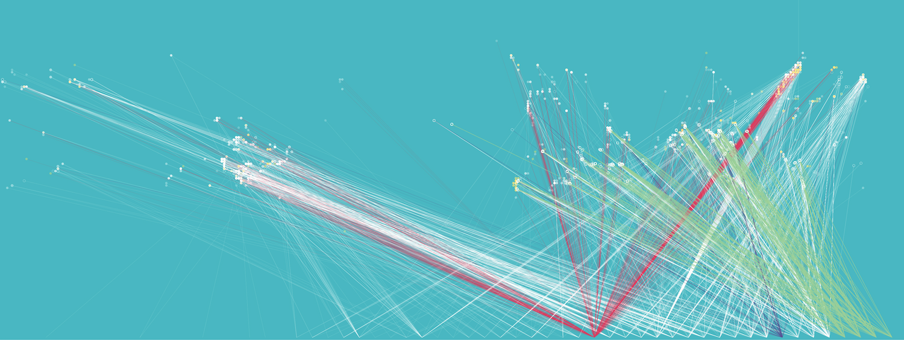
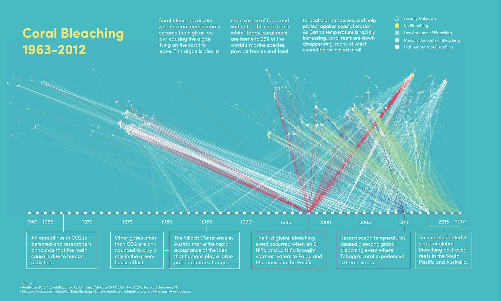
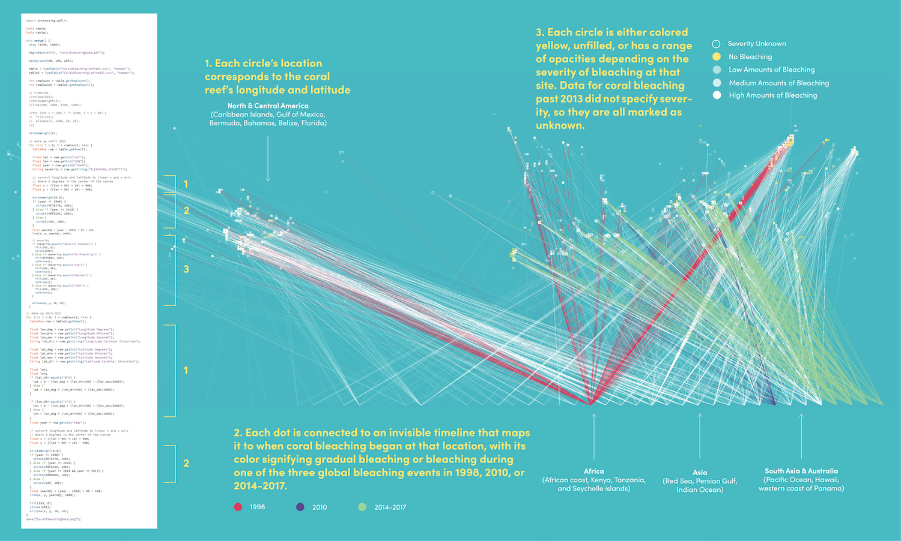

Coral reefs are home to 25% of the world’s marine species, provide nutrition to local marine species, and help protect against coastal erosion. As Earth’s temperature is rapidly increasing, coral reefs are slowly disappearing, many of which cannot be recovered at all.
PART 1: Visualizing the History & Global Impact
  Coral bleaching occurs when ocean temperatures become too high or too low, causing the algae living on the coral to leave. This algae is also its main source of food, and without it, the coral turns white. Today, coral reefs are home to 25% of the world’s marine species, provide homes and food to local marine species, and help protect against coastal erosion. As Earth’s temperature is rapidly increasing, coral reefs are slowly disappearing, many of which cannot be recovered at all.
In this project, I visualized the location and severity of global coral reefs. Each circle’s location corresponds to the coral reef’s longitude and latitude. They are connected to an invisible timeline that maps it to when coral bleaching began at that location, with its color signifying gradual bleaching or bleaching during one of the three global bleaching events in 1998, 2010, or 2014-2017. Circles correspond to the severity of bleaching at each site as they were colored yellow, unfilled, or range in opacity. Data for coral bleaching past 2013 did not specify severity, so they are all marked as unknown.
→ Spring 2021 (2 Weeks)
→ DSGN 337: Information Design & Visualization
→ Instructor: Mahir Yavuz
PART 2: Designing for Multi-Species
01. PRE-EXISTING RELATIONSHIPS
- Human activity causes coral bleaching.
- Coral reefs provide homes for sea urchins.
- Sea urchins eat algae, regulating their growth and preventing them from inhibiting coral reef expansion.
- Coral reefs provide homes and nutrients for algae.
- Algae produces oxygen and removes waste from coral.
- Coral reefs protect coastlines from storms and erosion, are a source of food and medicine, and provide jobs for local communities.
(Initial Sketches)
02. DETECTING SEA URCHIN SPINE MOVEMENT
Sea urchin spines will move continuously throughout the day. However, they will stop moving their spines if the changes in water pollution, temperature, and algal blooms are too significant. In order to utilize these sea urchins as a natural resource (and due to their uncontrollable growth and domination on the California coast), I designed a 3D biosensor to attach onto their spines and detect changes in spinal movement.
The circular indents on the top are for mussels, barnacles, algae, and other marine wildlife to continue habitating on the sea urchin, and to prevent further disruption to the marine ecosystem. As for the materials, the outer layer on the top would be made of a rock like material to prevent further integration of plastics into the ocean. The bottom would be softer and made from natural sponges, not only because sea urchins eat natural sponges, but also so the spines can be gently stuck into it.

03. DISPLAYING OCEAN HEALTH ON LAND
I designed a 3D sculpture that will emit different brightness intensities in the water based on the biosensor detection. The middle of the sculpture features a ring light, with glass swirling around it. When the marine ecosystem is healthy, the sculpture's brightness will increase, but as the sea urchin spine movement decreases, then the brightness of the sculpture will also decrease. This would also signify that coral bleaching is about to occur, and the need for humans to interfere and mitigate the effects of our actions.
The materials used in the sculpture would also mimic coral reefs since some coral are translucent, and to how coral reefs lose their color during bleaching events. AThese sculptures would be located in big cities near coral reefs. For example, this is King Street Wharf in Sydney, Australia, which is a popular tourist location near the Great Barrier Reef. Wharfs serve as a meeting point between the ocean and land, and these sculptures are meant to serve as a way to connect marine wildlife and humans, so humans can better see the effects of their daily activity.
04. COMPANION ARCHIVE
This publication serves as a companion guide to the biosensor and sculpture. It consistently features past coral reefs on the left with their post-bleaching image on the right. As the reader progresses through the publication, the images slowly disappear, leaving a ghost-like trace.
→ View full publication


In this project, I designed a biosensor and sculpture to bridge the gap between ocean data and human knowledge. When designing for multiple species - in this case, sea urchins, coral, algae, and humans - I considered the preexisting relationships between the four, and redesigned it to work towards a more mutually-beneficial coexistence. This was my first time designing 3D objects and it was exciting to consider the form and function.
→ Fall 2021 (3 Weeks)
→ DSGN 488: Senior Design Seminar
→ Instructor: Jacob Rivkin, Ani Liu